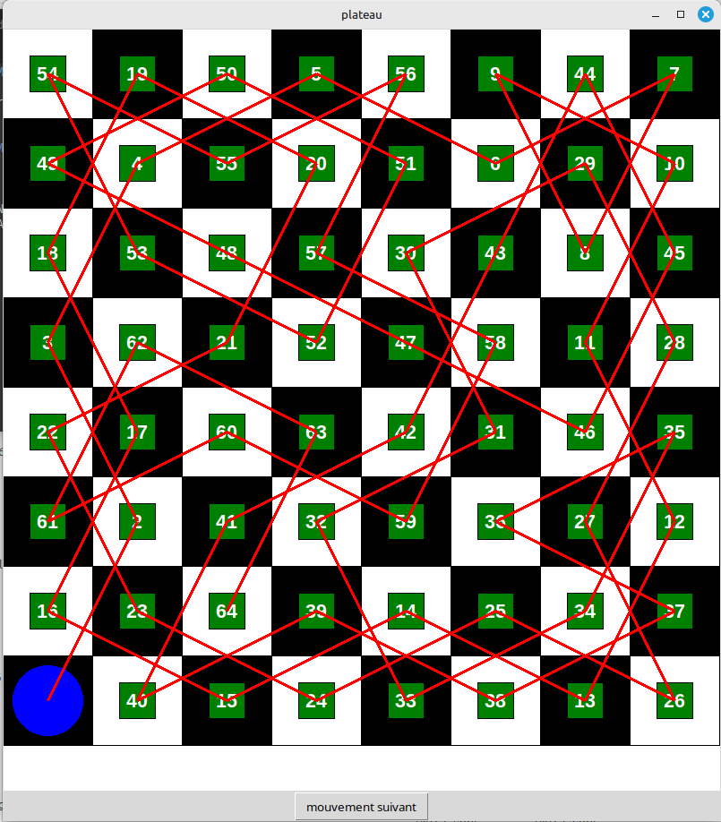
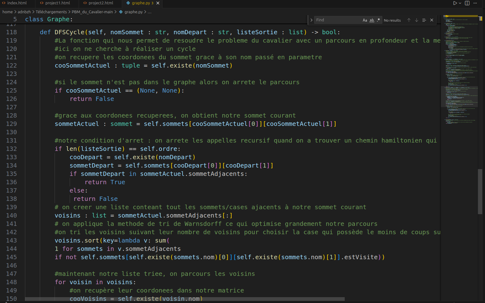
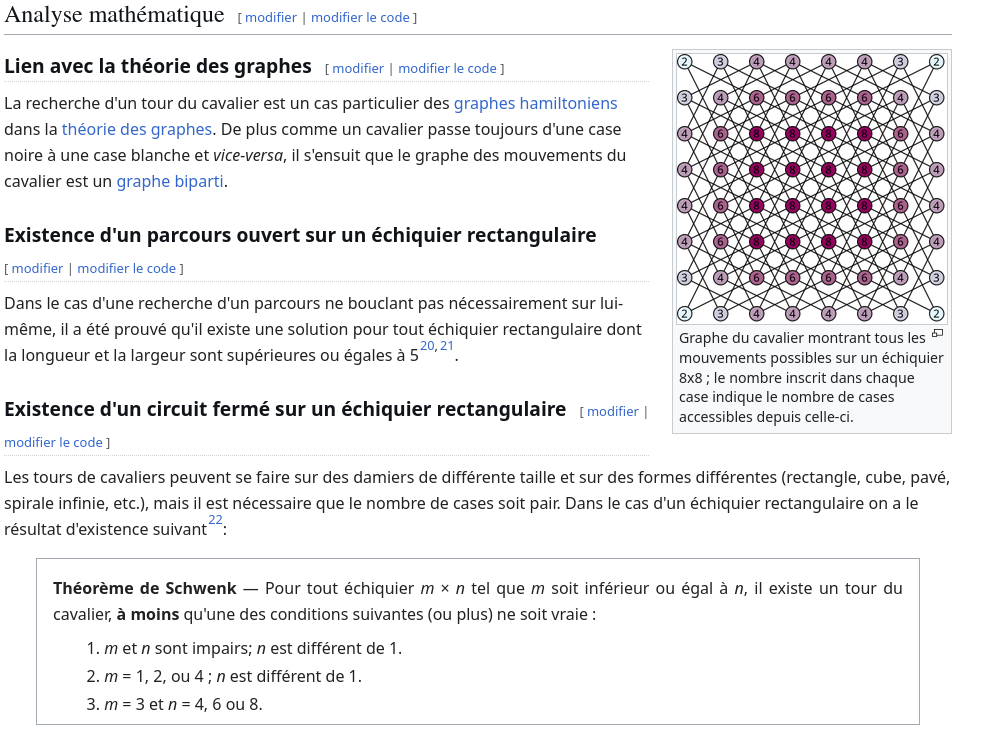

À propos du Projet
Ce projet avait pour objectif de créer un algorithme capable de résoudre le problème mathématique de la Balade du Cavalier. L'accent était mis sur l'implémentation de notion mathématiques pour résoudre un probleme algorithmique.
Ce projet en équipe nous a permis de rassembler nos compétences de programation et nos connaissances en théorie des graphes pour développer une solution au problème
Objectifs Réalisés
- Développer une interface intéractive et ludique
- Élaborer un algorithme le plus optimisé possible
- Utiliser des notions mathématiques complexex : BFS, DFS
- Vérifier la lisibilité du code pour la partager
- Documenter ses recherches et lier maths et informatique
Technologies Utilisées
Python, module orienté objet
Langage principal de l'algorithme
Bibliothèque python Tkinter
Bibliothèque pour créer une interface simple mais efficace
Git & GitHub
Gestion de versions et des scripts pour travailler en équipe
Résultats et Apprentissages
Ce que j'ai appris
Ce projet m'a permis de comprendre les lien entre la théorie des graphes et certains algorithmes de parcours de recherches avancés. Ce projet m'a fait découvrir une notion importante en développement : le backtracking.
Galerie du Projet


